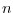
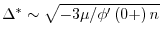
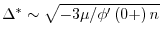

Next: データからのスケーリング指数の同定とヒストグラム作成に必要な最小試行回数の推定
Up: 議論と発展
Previous: 議論と発展
Contents
Index
式4の第一項にCramér-Raoの不等式を適用することで, コスト関数の下限が の統計量で与えられる.
の統計量で与えられる.
右辺の極値を考えることで, レートが平均, 相関関数なる定常確率過程について最適幅の解析解が求まる.
が十分大きい場合, の原点付近での展開式を用いて式7右辺の極値を与える を求める.
が原点でCusp型となるときは漸近値を用いて最適幅は
で与えられる.
が原点でなめらかなときは対称性からであり, 最適幅は
を求める.
が原点でCusp型となるときは漸近値を用いて最適幅は
で与えられる.
が原点でなめらかなときは対称性からであり, 最適幅は
 となる.
となる.
が小さい転移点付近では
と展開する(, は定数). このとき臨界点はでありランダウの２次相転移の理論が適用できる. では最適幅の振る舞いは
で表される.
Next: データからのスケーリング指数の同定とヒストグラム作成に必要な最小試行回数の推定
Up: 議論と発展
Previous: 議論と発展
Contents
Index
hideaki
2006-07-11